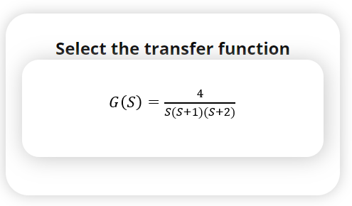
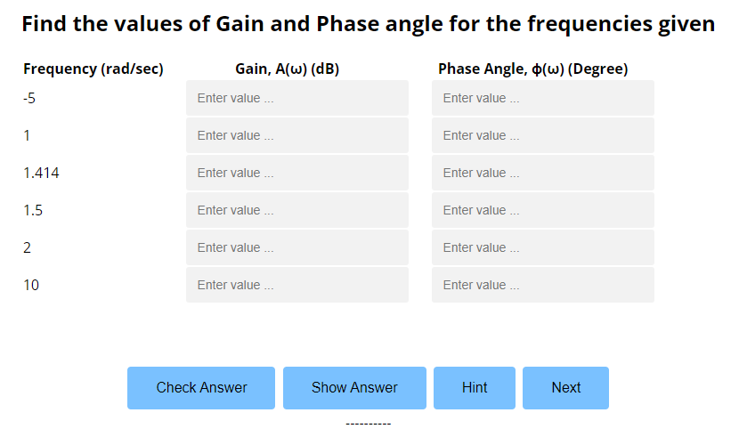
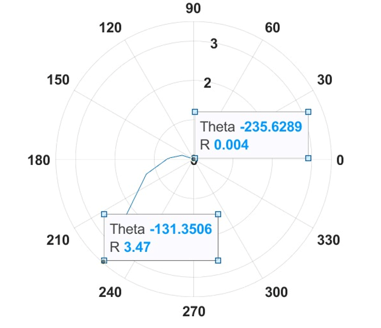
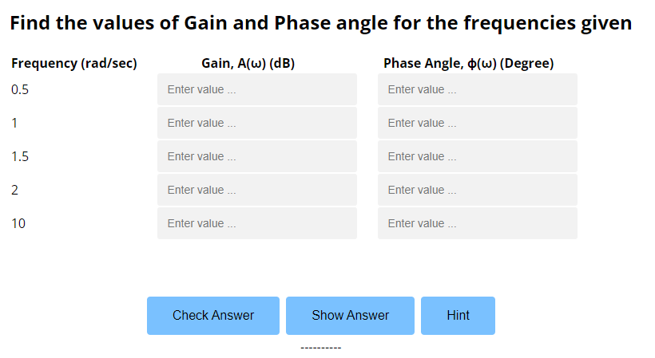

Firstly, choose the transfer function of the system by clicking the given transfer function. 
The user would calculate the gain and phase angle for the set of frequencies given in the simulator and enter the same in given specific text box. Then the user will press verify and display the solutions for checking the entered values are correct. If the answer is correct, the simulation will display ‘Correct’ else the user can click the hint button to get the help. 
Once the answer is correct, the user can click ‘Show graph” button displayed to view the final polar graph related to the given transfer function. 
Then the user can proceed to the next transfer function by clicking next button provided.
The user would calculate the gain and phase angle for the set of frequencies given in the simulator and enter the same in given specific text box. Then the user will press verify and display the solutions for checking the entered values are correct. If the answer is correct, the simulation will display ‘Correct’ else the user can click the hint button to get the help. 
Once the answer is correct, the user can click ‘Show graph” button displayed to view the final polar graph related to the given transfer function.
We Acknowledge NITK and PALS for extending their support towards successful completion of this experiment